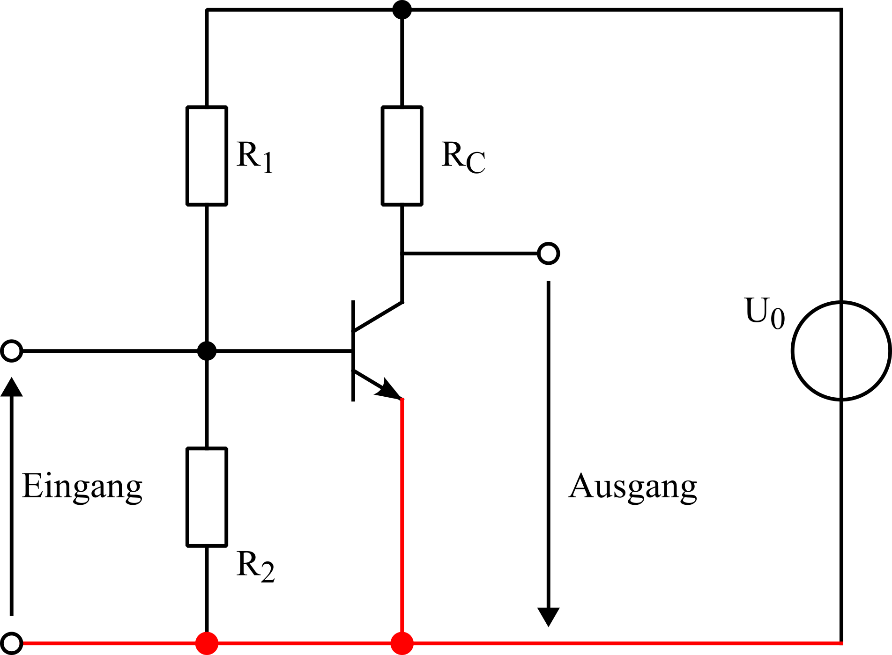
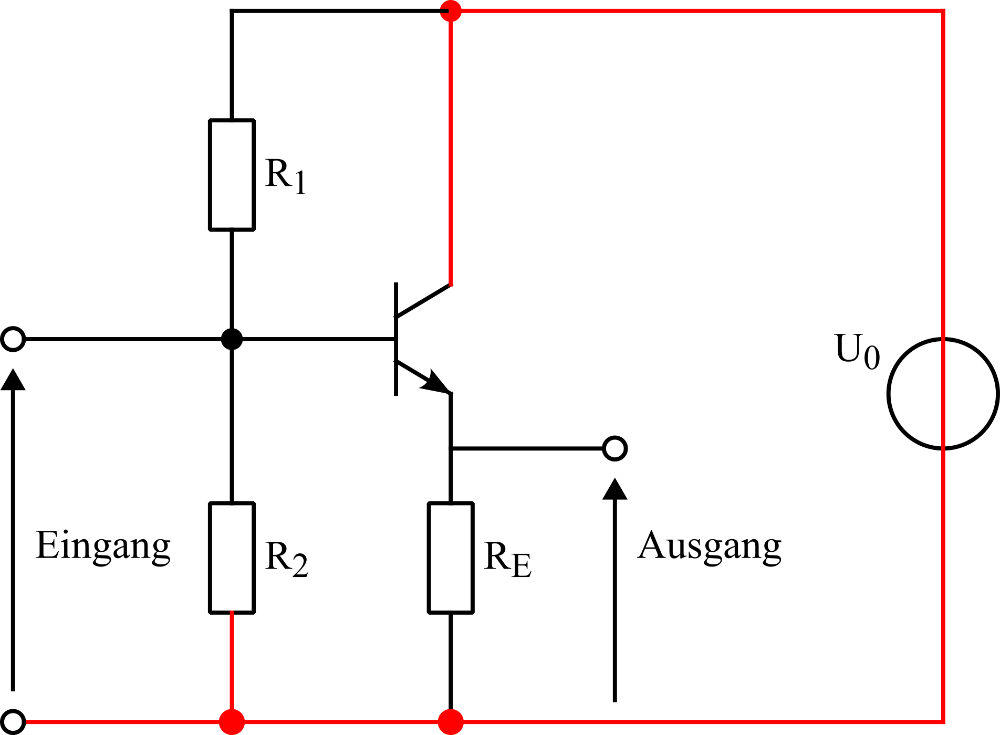

Auf dieser Website werden unterschidlich Themenbereiche, mit denen ich mich beruflich und privat befasse erklärt
Hier beschreibe ich wie man bestimmte Schaltungen auslegt, aufbaut und testet.
Falls möglich werden hierzu Formeln verwendet und es werden LTSpice-Dateien zum Herunterladen bereitgestellt, sodass jeder die Zusammenhänge selber nachvollziehen kann
Der Bipolartransistor kann in Verstärkerschaltungen verwendet werden.
Je nachdem wie der Bipolartransistor mit passiven Bauteilen verschaltet wird ergeben sich unterschiedliche Vestärkerschaltungen.
Bei der Emitterschaltung hat das Eingangs- und das Aussgangssignal die negative Klemme am Emitter

Bei der Kollektorschaltung liegt der Bezugspunkt am Kollektor.
